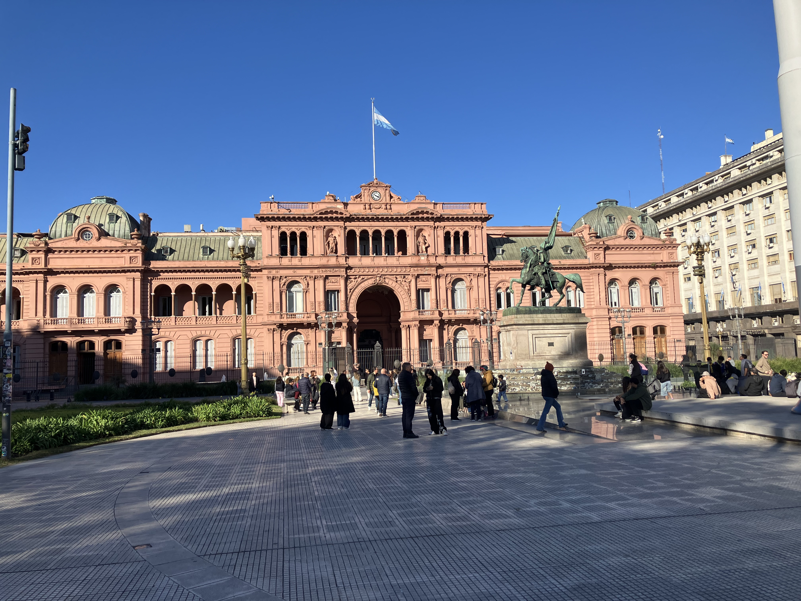
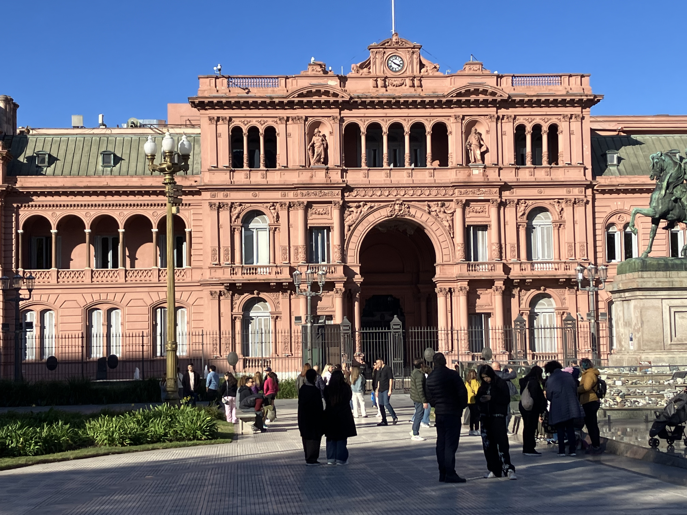
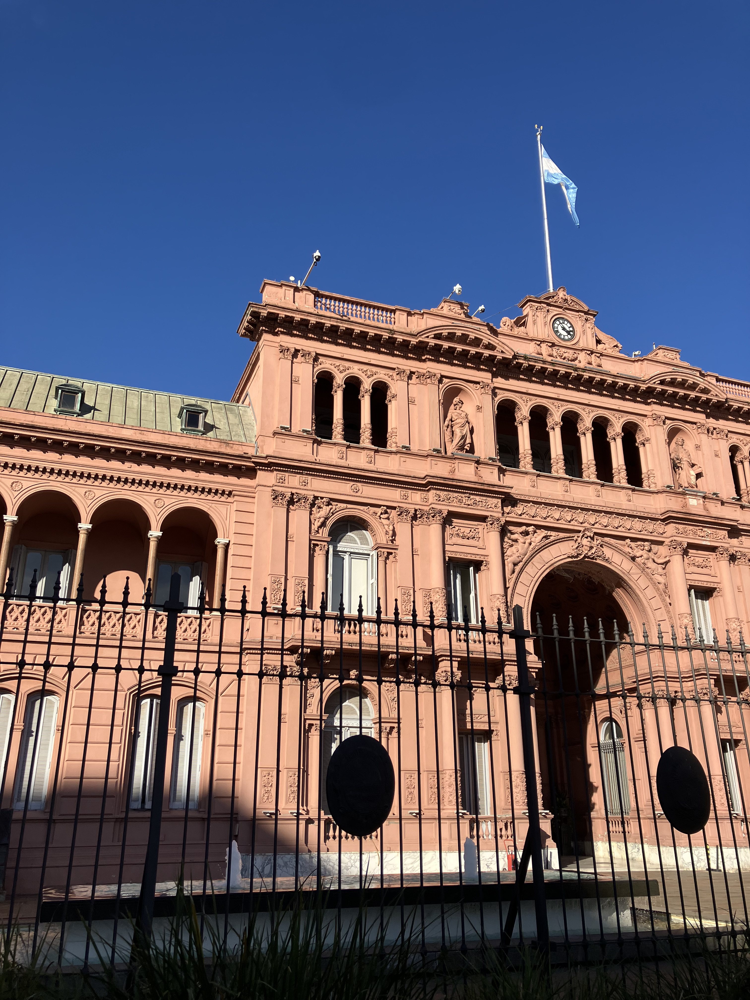
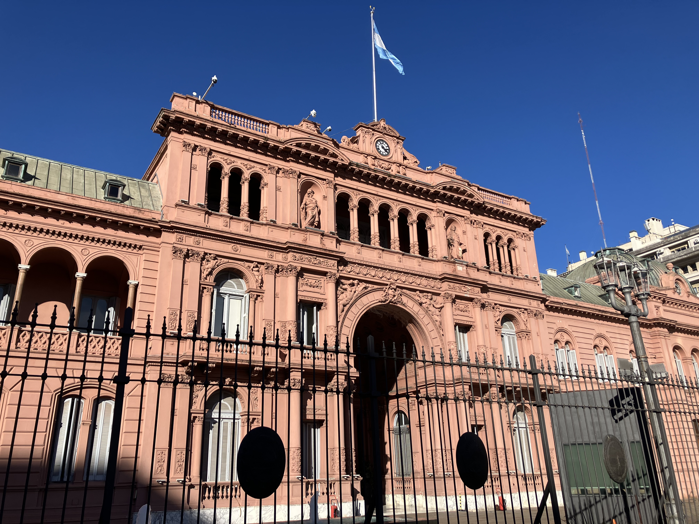
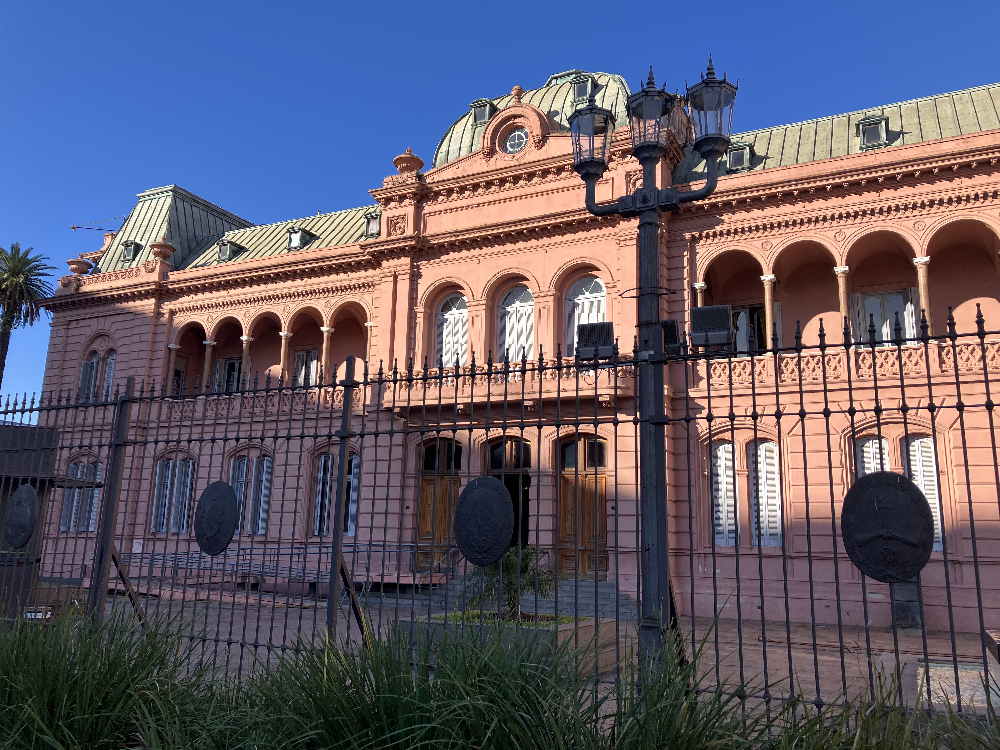
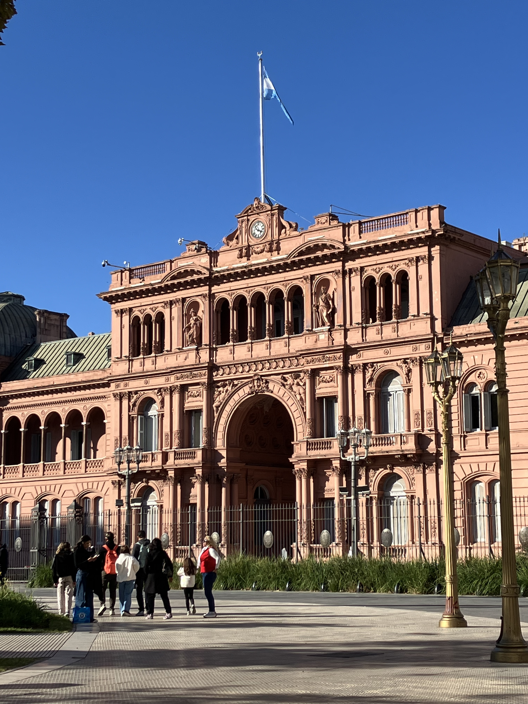
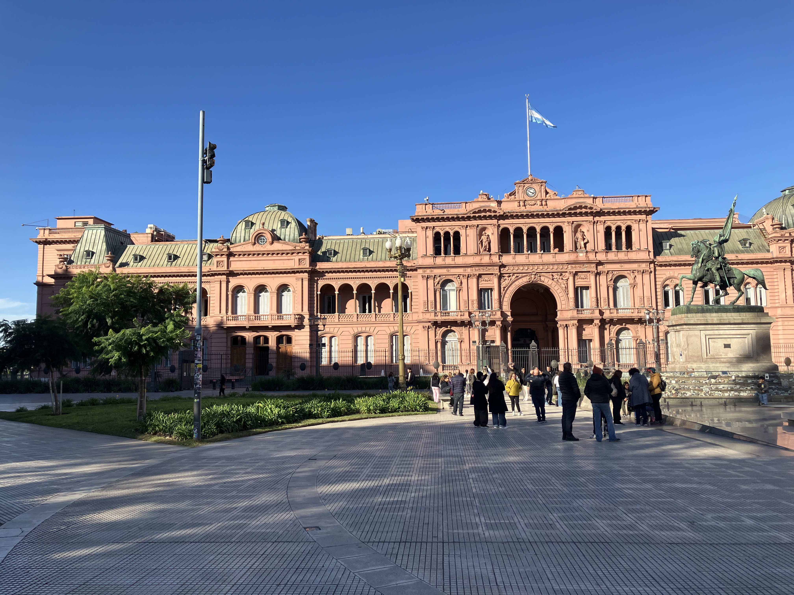

Casa Rosada

Architect: Francesco Tamburini, Enrique Aberg, Carlos Kihlberg
Location: Balcarce 50, Buenos Aires
Completed: 1898
Style: Italianate / Eclecticism
History
The Casa Rosada is the official office of the President of Argentina and one of the most iconic political buildings in South America. Built over the site of an old colonial fort, it became the center of national power and witnessed major political events throughout Argentine history.
Architecture
Its famous pink façade, elegant arches, balconies, and monumental proportions reflect a combination of Italianate influence and eclectic nineteenth-century civic design. The building stands as both a symbol of authority and national identity.
Legacy
From presidential speeches to historic public demonstrations in Plaza de Mayo, the Casa Rosada remains deeply connected to Argentina’s political memory. It is not only a government building, but also a national symbol recognized around the world.
Gallery






